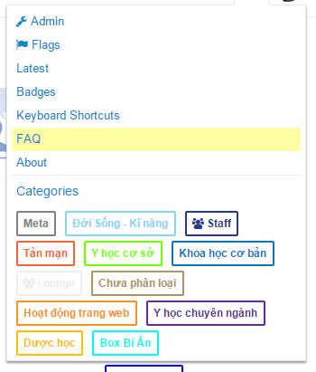
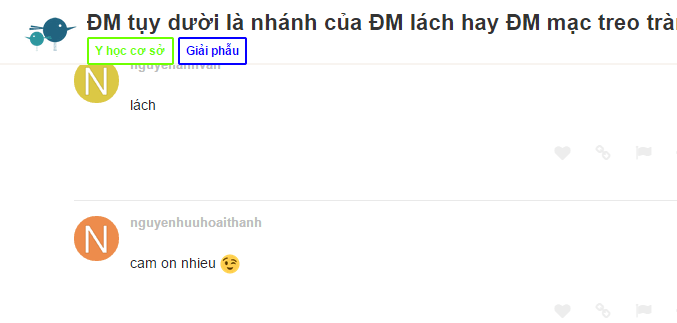
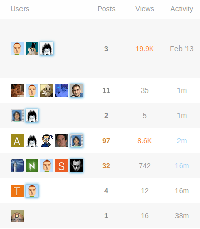
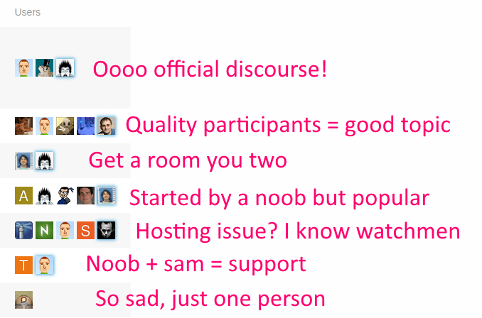
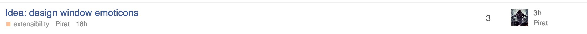
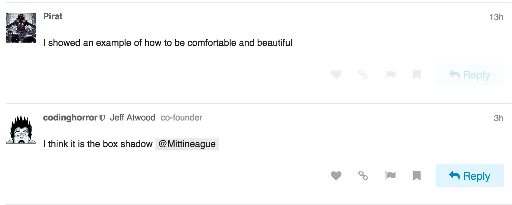

Sam's Simple Theme
I think @sam is just updating the code snippets in the first post in this topic as he moves along. @sam have I got that right?
Incidentally, thanks for doing this! I have been enjoying observing this experiment and it’s going to be helpful to show my team how amazingly customizable discourse is as a platform.
Here is a good base for customize on our own
https://meta.discourse.org/?preview-style=ab0d551a-aa4b-4590-82b2-f13859205808
I’ve updated my post with the current CSS and Header changes.
@sam, did you stumble across this little oddity?
{kind=link}
There is a spurious colspan=“2” in the main-link clearfix TD where it really should be a colspan=“1”… I was not really able to reproduce it with anything but the “Welcome to Discourse”-thread…
/Edit: @chapel’s design (thanks for sharing btw!) shows the same effect!
Is the Pinned icon adding an “extra” table cell to that row?
Nope, it must either be the missing category, or the missing poster list, if I take a look at the original design… do we need the colspan="{{titleColSpan}}" at all? Is there any use case left for it in the new, reduced designs?
Let me check. I don’t have any topics uncategorized so that might explain why I haven’t seen it.
Nope, the missing category isn’t the culprit… must be the missing poster list:
{kind=link}
I just kicked the colspan and haven’t found any other errors in the topic list…
I’m not able to reproduce or see the case you’re seeing.
Due to the modifications in the simplified topic list, I would guess that it isn’t necessary but I haven’t tracked down where that variable is created, I’m sure @sam could answer authoritatively.
Thanks anyway Jacob - so let’s wait and see what @sam knows about titleColSpan! 
He is out on vacation for 2 weeks I believe, so he may not show up here any time soon.
Quickly searched and found this:
From the looks of it, this is the logic that you were seeing: this.get('model.isPinnedUncategorized')
So it’s a combination of a pinned topic that is uncategorized. So he colspan attribute is unnecessary for the simplified design.
Without the table headers, how do we sort by # of replies, recency, or category?
Some hack around inspired by this topic 


<script>
Discourse.HTML['categoryStyle'] = function(category) {
var color = Em.get(category, 'color'),
textColor = Em.get(category, 'text_color');
if (!color && !textColor) { return; }
// Add the custom style if we need to
var style = "";
if (color) {
style += "border: 2px solid #" + color + "; ";
style += "color: #" + color + "; ";
}
return style;
}
Discourse.HTML['categoryBadge'] = function(category, opts) {
opts = opts || {};
if ((!category) ||
(!opts.allowUncategorized &&
Em.get(category, 'id') === Discourse.Site.currentProp("uncategorized_category_id") &&
Discourse.SiteSettings.suppress_uncategorized_badge
)
) return "";
var name = Em.get(category, 'name'),
description = Em.get(category, 'description_text'),
restricted = Em.get(category, 'read_restricted'),
url = Discourse.getURL("/c/") + Discourse.Category.slugFor(category),
elem = (opts.link === false ? 'span' : 'a'),
extraClasses = (opts.extraClasses ? (' ' + opts.extraClasses) : ''),
html = "<" + elem + " href=\"" + (opts.link === false ? '' : url) + "\" ",
categoryStyle;
// Parent stripe implies onlyStripe
if (opts.onlyStripe) { opts.showParent = true; }
html += "data-drop-close=\"true\" class=\"badge-category" + (restricted ? ' restricted' : '' ) +
(opts.onlyStripe ? ' clear-badge' : '') +
extraClasses + "\" ";
name = Handlebars.Utils.escapeExpression(name);
// Add description if we have it, without tags. Server has sanitized the description value.
if (description) html += "title=\"" + Handlebars.Utils.escapeExpression(description) + "\" ";
categoryStyle = Discourse.HTML.categoryStyle(category);
if (categoryStyle) {
html += "style=\"" + categoryStyle + "\" ";
}
if (restricted) {
html += "><div><i class='fa fa-group'></i> " + name + "</div></" + elem + ">";
} else {
html += ">" + name + "</" + elem + ">";
}
return html;
}
</script>digging the squares
{kind=link}
I switched over to using my minimal view as the default on my forum. If you would like to see how it looks/feels feel free to check it out at Wasting Your Life
I haven’t tried the squares, but I am thinking of alternative styles to try and see how they look in the different areas categories are shown.
 I just always think that the “replies” and “last author” column should be changed. But I have no idea about design, though. =)
I just always think that the “replies” and “last author” column should be changed. But I have no idea about design, though. =)
@chapel This looks so clean, I think it should be considered as the default discourse theme.
I do like it very much! Clean and minimal  I want it!
I want it!
The info is in my post above. Has the necessary CSS and JS changes.
Edit: added link to the post.
{kind=link}
This is just awesome! I especially like the category bullets instead of these bars. One little suggestion: Make the topics’ color a bit darker
A little off topic but you should use lazy load for your site.
@sam Looks like your width setting for the recent poster is too small.
uh… just looks like @DeanMarkTaylor’s name is too long to me…
That’s just mean 
Remember that some characters are wider than others - only 7 W’s causes an issue.
That’s a fantastic design. Do you have any plan to set this as a
possibile theme to choose?
I do love the nodeBB topic list design.
{kind=link}
Looks good. Having two main columns to look at seems easier to scan. The category column in the middle (default template) is awkward and doesn’t give immediate context to the title since you have to look over to see it.
Yeah, and I especially dislike this one:

Posts, Views and Activity is ok (I personally would neglect Views) but Users does not provide any useful information for me. It may be important who is involved in a discussion but a) I don’t care and b) I open the topics which I am interested in before I look at these avatars. So  again for this minimal theme concept.
again for this minimal theme concept.
I wonder what it would look like if you added the extra participants in a column on the extreme right in something like a 2x2 grid (no padding between them) since you have more room with the two rows of text per topic. Might not be enough vertical space.
I beg to differ!

Lots of info there.
-
Size, if < 5 avatars then it’s a limited discussion, if 2 it’s “get a room you two”, if 1 it’s a topic nobody replied to
-
Noobiness. Lots of letter avatars? Drive-by participants, probably.
-
Recognition. I know the kinds of topics I can expect from certain folks here and sometimes I am excited (or… not excited…) when I see who started the topic or posted last.
-
It’s also faster to recognize avatars than name words for me.
-
These are my peeps. My people. I need to see them. It’s like Cheers, you want to go to the place where everyone knows your … avatar
And then of course
Thanks for your explanation. But these are just my 2 cents on this topic. I do like the minimal concept so everybody is happy. 
For this purpose we can use sticky posts. Users who actually google your forum (=sites with a lot of information or solutions for common problems) have no idea about who is “official”. Good examples for forums which I visit frequently without even having an account are:
So, if I am trust user level 4 and I trink coffe every day with the staff it’s fine. If I just google the forum the avatars are not quite helpful. After I switched from a bulletin board to discourse a lot of my users claimed that it is really confusing. After I went into more detail I found out that it is just too much (maybe redundant) information on the topic list for them.
As above. Most people won’t know your avatars (and avatars may change over time) so they will just ignore it.
May contain useful information  .
.
I just recognize sam and your avatar. But support and hosting topics also have a support category :).
So in my opinion these avatars are just a little bit clown vomit.
That’s odd because there’s this super famous book in the US, it’s called How to Win Friends and Influence People. One of the main points in the book is this:
Remember that a person’s name is, to that person, the sweetest and most important sound in any language.
You can replace this with
Remember that a person’s avatar is, to that person, the sweetest and most important image on the Internet.
So seeing your avatar in the lists after you post, even if you have no idea who anyone else is, is still valuable. The sweetest image…
I think there are two reasonable counterpoints:
-
I can see the argument that on a huge, massive, epically large, really busy Discourse instance with hundreds of thousands of users there’s no way for people to really keep track of each other, like New York City. In that case every topic will have the full complement of 5 avatars, so you can’t use it as an activity indicator as much and (well, I guess depending if you hang out in very narrow categories and subcategories) you are not as likely to know the people there.
-
Certainly new users won’t know anyone. So other than “how busy is this place” and “how many topics have real conversation with 5+ people in them” – which I’d argue is quite important information – the value of the avatars is diminished versus someone who stops in regularly. Note that new users get the
/toppage by default which does suppress avatars and shows users the “greatest hits” so it kinda solves this problem on the first visit anyway.
The 5 avatar design default may indeed be weak for large sites and for very new users, but it optimizes for small and medium discourses with moderate to low levels of activity. I think that’s correct. I think that represents what the vast, overwhelming majority of Discourse installations will be for the forseeable future.
The 1-5 avatars next to each topic do provide a lot of information at a glance – about people. That’s appropriate, because discussion is made of people. At least, the last time I tried to have a discussion with the same person over and over it didn’t go so well…
We have this super small, 30-member Discoursce install, and I wouldn’t imagine using it without the 5-avatar row. Super useful, exactly for the reasons you stated.
Now, I realize that we are discussing defaults (same thing in the clown vomit thread) and I trust that you know better. As long as it’s customizable, either via CSS, a checkbox or by modifying a template, I’m OK with whatever decision you come up with.
Sounds like another use-case for a setup wizard!
As someone who runs a forum exactly like this, I disagree with this assumption.
I used the default for months. At first I got complaints about the topic view, which I expected due to it being a change. No one said they liked it, everyone seemed to tolerate it.
When I switched to the minimal layout, I heard no complaints, but plenty of compliments and thanks. This is anecdotal of course.
I understand your reasoning, and to a certain level it makes sense, but without prompting and some teaching, users seem to look at it as extra noise. It really seems like a power user feature that not everyone enjoys. Even for myself, it became extra noise because I didn’t need to see that many people in a thread. If I knew who created the thread that gave me context if I cared about the thread. Seeing the amount of replies and potentially the last person gave me the rest of the context.
Thinking about it, the flaw with the user column is because it is hard to see what it means without explanation. It is technically information dense, with no real explanation. So while the information is valuable, it isn’t something that is easy to grep at a glance. Just because you @codinghorror think it makes sense, you really need to look at it as an outsider or someone new to really understand why it is confusing.
For me the 5 avatar thing is extreme noise on meta cause it basically does not matter to me when I am browsing meta.
I read all posts in all topics, so on the list all I care about is the last poster and creator as an extra, albeit weaker, clue (which is one reason I opted to have creator in text and not as a picture).
I think there is some credibility to the complaint that the 5 poster thing can be viewed as information porn by some users and information overload to newbies. I also get the power it provides.
Some communities are also destined to have super long usernames, just check out some of the usernames for moderators over at imgur:
And I can assure you that the imgur users enjoy their super long usernames, including these users from a couple of the most popular post comments today:
AdvancedIntellectualApplicationsofQuantumTunnelsUnfortunateSchmeltingAccidentImUploadingMyPicturesToThisWebsiteCalledImgurtomhiddlestonsthirdtesticlewhyyesyoucantouchmeallyouwantBatmansFirstEnemyWasCalledManBatHaveYouTriedInstallingAdobeReaderthisusernamehadbetternothavebeenchosenalreadyLayThineEyesUponThyFeildOfFucksAndSeeThatItIsBarren
I’m pretty sure they are also able to change their usernames any time they want.
I’m not saying it’s sane or right - but it exists.
Consider putting the username on the left.
@sam Found an odd issue:
On the topic list it shows the last post user like this: 
But the actual last post was by codinghorror: 
Thread in question: https://meta.discourse.org/t/idea-design-window-emoticons/24654/4
I haven’t seen it before.
Odd, this is not specific to my design, happens on standard view as well, something about the data is bust I wonder if its somehow related to @eviltrout’s wiki changes
Yeah, I figured as much, but since we saw something similar that is why I thought it might be related.
The “topic featured users” has been buggy for as long as I can remember.
Made some changes, still feeling them out.
Notes on changes:
- Removed creator name and date
- Moved poster avatar to the right
- Right align text
- Move last post date under last poster name
I am thinking about what to do with the category. I like the idea of having a bar on the left of the full row with the category color. Though without the category name it would be a bit odd. The goal would be to have the topic title be on one line with nothing under it.
I was thinking about the time I cared about the creator of a topic. Generally it is only when it is first created, and the last poster section will have that info at that point. It lets the topic stand out by its title and activity.
I think you should give this a try:
- full bar of color on left
- move category to its own column again
- keep the small bar of color next to the category name
(yes, it’ll be duplicated, but I think it could be worth it… in the category column, it builds the association of color and name… on the left, it provides it ‘at a glance’ when scanning topic names)…
Not crazy about those changes, to be honest…
Like this change… agree with your reasoning…
Curious what you don’t like about them? Did you mean the avatar location change as well?
I feel like the layout in sam’s current minimal design with the avatar to the left of the left-aligned text just reads better… I think I’m just used to seeing images to the left or the top of its metadata in general… It feels more naturally anchored to me that way.
While to a certain degree I am with you there. Though having the avatar on the right flows better in regards to alignment. specially with longer usernames.
I definitely prefer the username on top, as the date is somewhat secondary.
@chapel Have you thought about having the topic creator avator on the left ? Like they have here:
I did try it but didn’t like it. Was too busy and detracted from the topic title. Felt weird having an avatar on the far left and one on the far right.